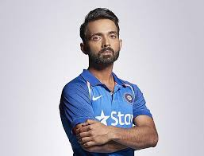

Ajinkya Rahane
1988-Present
"Ajinkya Rahane: The Silent Warrior with a steely resolve and a golden touch!"
Ajinkya Rahaneon born 6 June 1988 is an Indian cricketer and former captain and former vice-captain of the Indian team in Test cricket, who has played for Indian cricket team in all formats as a batsman. He currently captains Mumbai in Ranji trophy and plays for Kolkata Knight Riders (KKR) in the IPL and Leicestershire in County Championship. Rahane plays primarily as a middle-order batsman in the Test format and as a top-order batsman in white-ball forms of the game. As a captain of the national team, India has only lost one match under his captaincy.
Biographies
- "Ajinkya Rahane: The Inspiring Journey of a Cricketing Hero"
- "Ajinkya Rahane Color"
- "Ajinkya Rahane: A Cricketing Gentleman"
- "Ajinkya Rahane: The Silent Warrior"